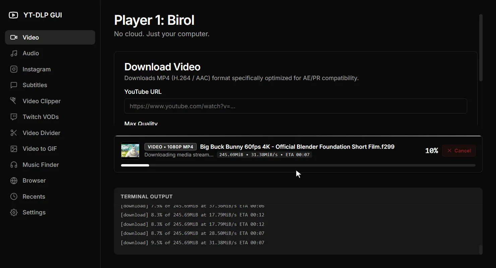
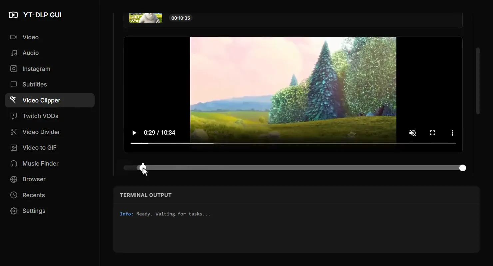
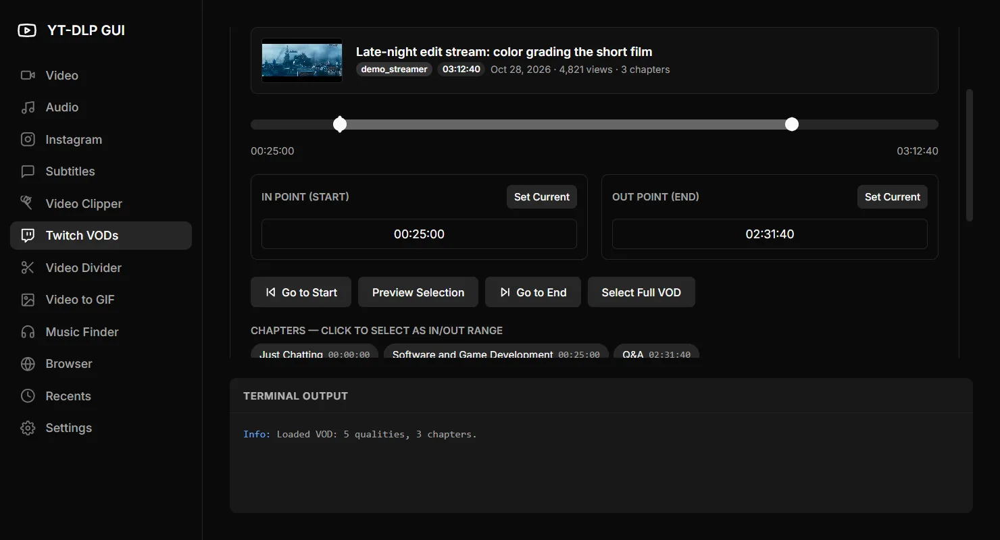
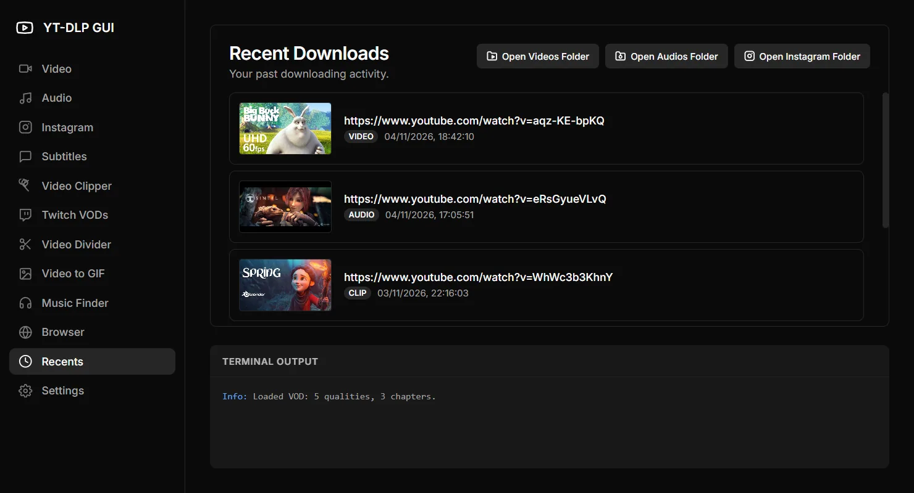

Premiere-ready by default.
H.264 and AAC in an MP4, up to 4K. Whole playlists too, no converting.

A free desktop app for YouTube, Instagram and Twitch. Built on yt-dlp, without the command line.
yt-dlp -S "vcodec:h264,res,acodec:m4a" --merge-output-format mp4 "URL"
What one Premiere-ready MP4 used to take. Now it’s one paste.
H.264 and AAC in an MP4, up to 4K. Whole playlists too, no converting.

Preview the video, drag in and out points, download only that section.

Pick a resolution, jump to a chapter, keep only the hour you want.

Pull finished files into Premiere, After Effects or Resolve. Recents keeps the rest.

yt-dlp and FFmpeg update themselves every time you open the app. When YouTube changes, the fix shows up on its own.
No ads, no pop-ups, no account. Files come straight to your computer, and the code is open for anyone to check.
Up to 4K, never capped, in formats your editor opens. Free forever, under the MIT license.
Run the installer. yt-dlp and FFmpeg set themselves up.
Drop in a YouTube, Instagram or Twitch link and pick a format.
Pull the file into your editor, or find it later in Recents.
Yes. It’s MIT licensed for personal and commercial work. No paid tier, no ads, no trial. Pricing
It’s open source, with no ads, no account and no telemetry. Files go straight from the site to your computer. Optional extras like weather and Music Finder only call their own services when you turn them on. Privacy
Yes. Video defaults to H.264 and AAC in an MP4, which Premiere Pro, After Effects and DaVinci Resolve open without converting. Drag the file straight from the app onto your timeline.
yt-dlp updates itself every time the app starts, so fixes usually arrive before you notice. If a download still fails, hit Force Update in Settings, or switch to the nightly channel there.
No. The app sets both up on first launch. If you already have them on your PATH, it uses those.
Playlists, yes: paste the playlist link and it downloads every video. For members-only or age-restricted videos your account can watch, sign in through the Browser tab or let the app use your browser’s cookies in Settings.
Instagram and Twitch have their own tabs, and the Video tab hands any link to yt-dlp, which supports many more sites. If a page still won’t work, open it in the Browser tab and save the video it finds.
The installer is for Windows 10 and later. On macOS and Linux, clone the repo and run npm install, then npm start.
It depends on what you download. Only download content you own or have permission to use, and follow each platform’s terms.